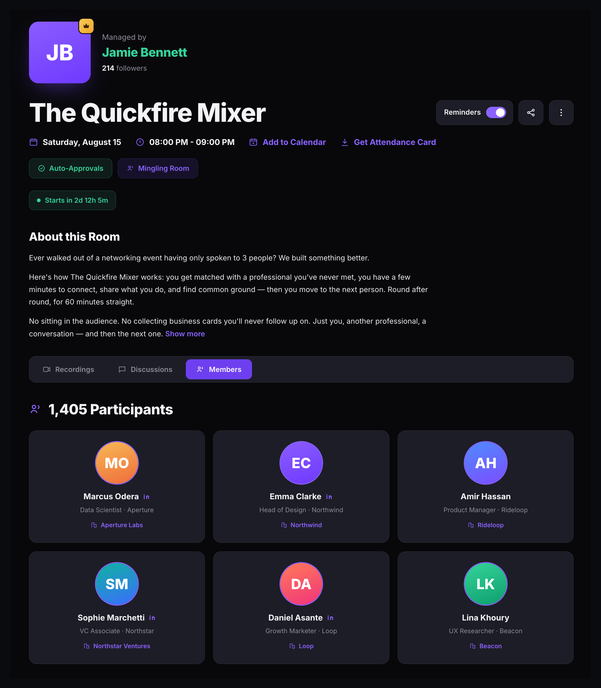
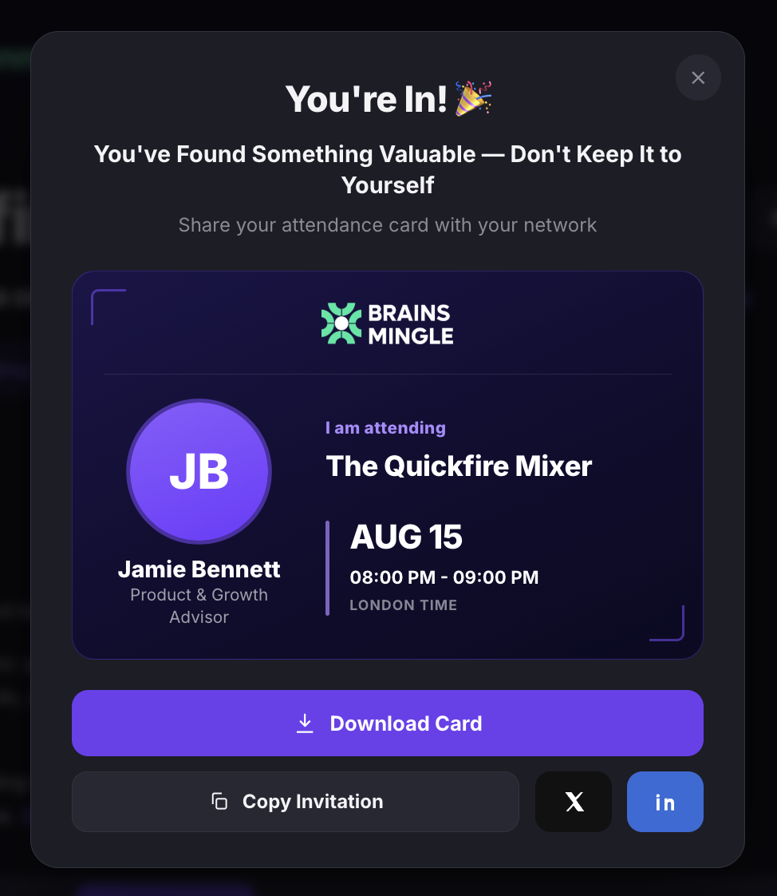
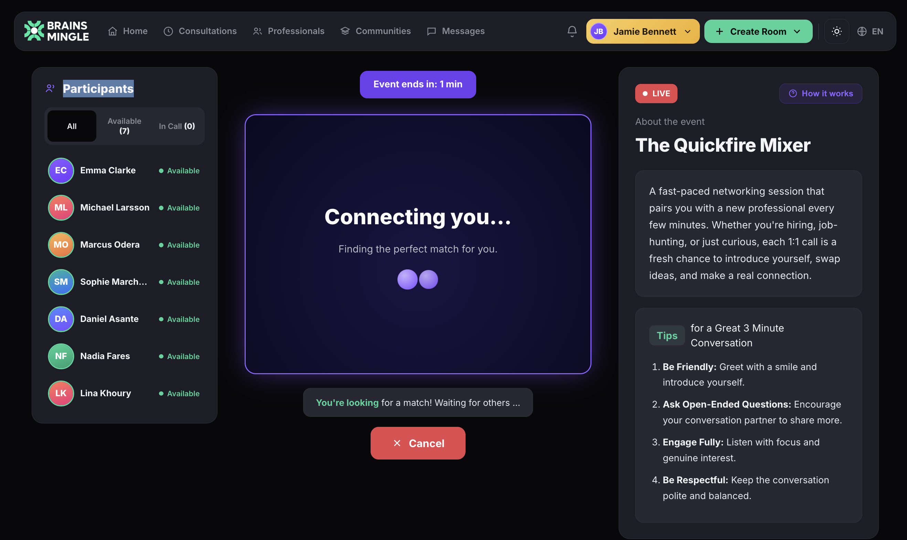
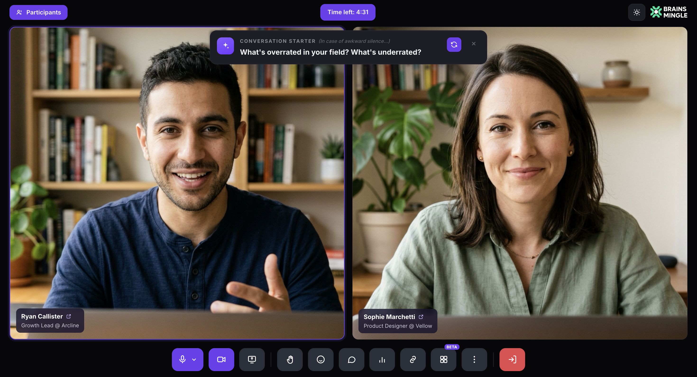
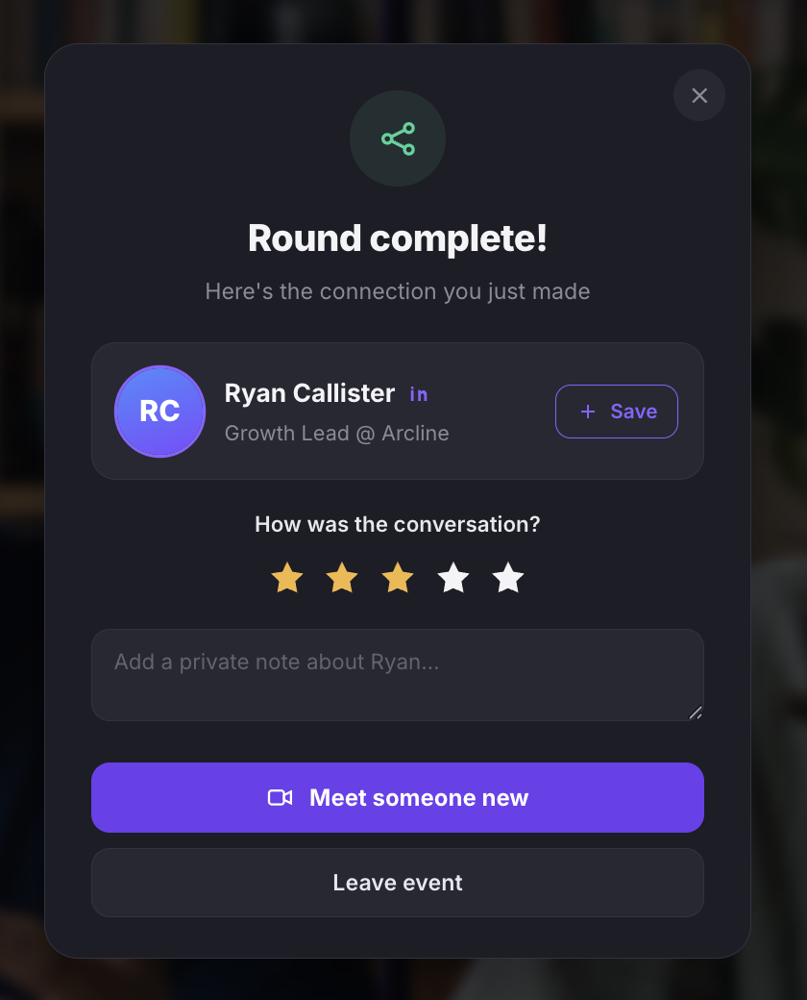
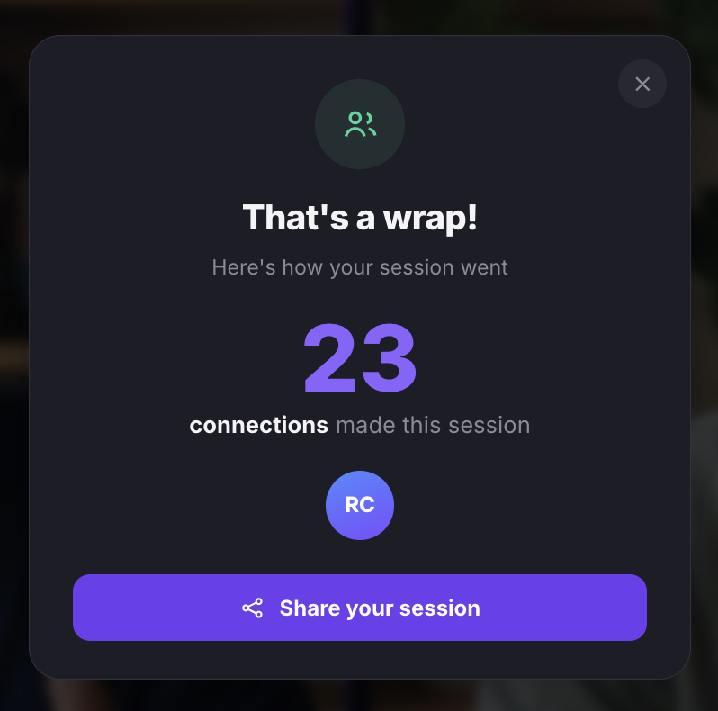

Manage a speed networking room
After creating a speed networking room, the room detail page is where you share the event link, invite participants by email, download the attendance card, manage participants, and run the live matching session.
View the room detail page
Navigate to the room detail page by clicking the room title from your dashboard. The page displays the host profile, room title, date and time, session badges (Auto-Approvals, Mingling Room), a countdown timer, and the room description. Below, tabs for Recordings, Discussions, and Members let you manage post-event content and view participants.

Share the room link and invite participants
- On the room detail page, click the share icon in the top-right corner to share on X, LinkedIn, or copy the invitation.
- To invite participants by email, click Invite next to the link bar.
- In the Invite Guests by Email dialog, enter an email address and click + Add. You can add up to 5 email addresses per invitation.
- Optionally enter a Custom Message to include a personal note with the invitation (up to 500 characters).
- Click Send Invitations.

Download and share the attendance card
- On the room detail page, click Get Attendance Card next to the date and time.
When participants join the room, they see a You're In! confirmation with a branded attendance card showing their name, the room title, date, and time. They can download the card or share it directly on X and LinkedIn.

View form responses
- On the room detail page, click View form responses below the room date and time. This opens the collected registration form responses from attendees.
Manage participants
- Click the Members tab on the room detail page to view all confirmed participants. Each participant card shows their name, job title, company, and a link to their profile.
- Use the Recordings tab to view any recorded sessions from this room.
- Use the Discussions tab to view post-event discussions.
Join the live session
- On the room detail page, click Join Session to enter the live speed networking room.
- The left sidebar shows the Participants panel with three views: All, Available, and In Call.
- The center area shows a camera preview with a note that no one can see you yet.
- The right panel displays the event description, a LIVE badge, a How it works link, and Tips for a great conversation.

Start matching
- Click Meet someone new to start the matching process. Each person is matched only once.
- The platform displays a Connecting you… animation while it finds your match. You can click Cancel to stop the matching process.

- Once matched, you're connected into a 1:1 video call. A Conversation Starter prompt appears at the top to help break the ice. Click the refresh icon for a new prompt, or × to dismiss it.
- The Time left timer shows how long remains in the round.
- Use the toolbar at the bottom to mute your mic, toggle your camera, share your screen, raise your hand, send a reaction, open chat, or leave the call.
- When the round ends, click Meet someone new again to start the next match.

Rate your conversation
When a round ends, a Round complete! screen appears showing the connection you just made. You can:
- Click + Save to save the connection to your network.
- Rate the conversation using the star rating (1 to 5 stars).
- Optionally add a private note about the person for your own reference.
- Click Meet someone new to start the next round, or Leave event to exit.

View the session summary
When the event ends, a That's a wrap! summary shows the total number of connections made during the session. Click Back to room to return to the room detail page where you can view all connections in the post-event summary.
